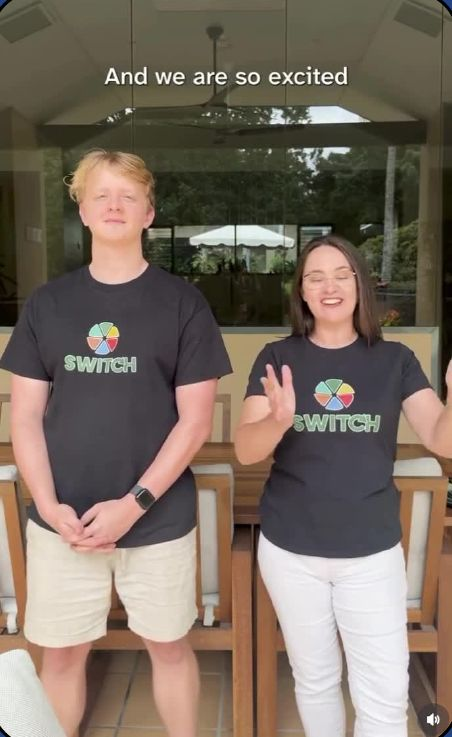

video editor · 2026
t15 media.
In the winter of 2026, I joined T15 Media, an Emmy-nominated video production company, as a video editor intern. I moved up to become a contract editor by October. This opportunity has given me hands-on experience of how a media house functions.
I have also been able to create brand content for their socials along with a fellow intern. I have edited over 10 full client videos and over 4 brand content pieces, and shadowed shoots with videographers.


social media projects.
intern · summer 2025
Switch4Schools
Over the summer of 2025, I interned with Switch4Schools, a leading Social Emotional Learning (SEL) platform based in Brisbane, supporting the launch and promotion of their new merchandise collection.
I set up and configured a Shopify storefront integrated with their existing Wix website. I led the creation of all promotional content across their digital platforms, including social media graphics, product photography direction, short-form videos and copy.
The internship gave me hands-on experience in end-to-end digital campaign strategy and execution, an advanced understanding of Shopify, and maintaining a consistent brand identity.
Instagram Website
